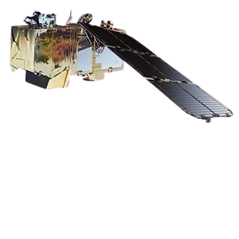
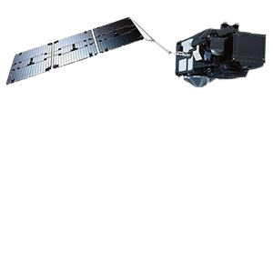

Copernicus Sentinel-1
Sentinel-1 provides all-weather, day and night radar imagery for land and ocean services. The twin satellites Sentinel-1A and Sentinel-1B were respectively launched on 3 April 2014 and on 25 April 2016.
.png)
Copernicus Sentinel-2
Sentinel-2 provides high-resolution optical imagery for land services. It provides for example, imagery of vegetation, soil and water cover, inland waterways and coastal areas. Sentinel-2 also delivers information for emergency services. The twin satellites Sentinel-2A and Sentinel-2B were respectively launched on 23 June 2015 and on 7 March 2017.
Copernicus Sentinel-3
Sentinel-3 provides high-accuracy optical, radar and altimetry data for marine and land services. It measures variables such as sea-surface topography, sea- and land-surface temperature, ocean colour and land colour with high-end accuracy and reliability. The twin satellites Sentinel-3A and Sentinel-3B were respectively launched on 16 February 2016 and on 25 April 2018. EUMETSAT operates the satellites and delivers the marine mission, while ESA delivers the land mission.
